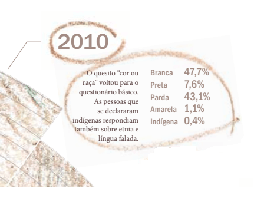
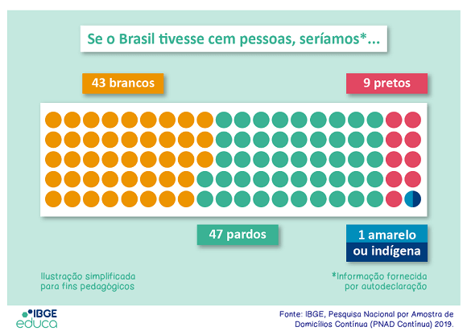
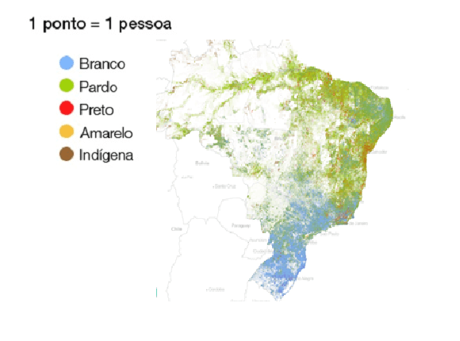
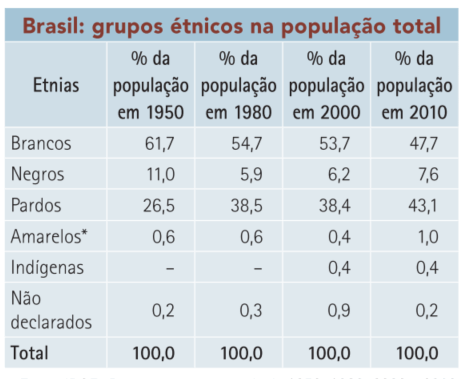
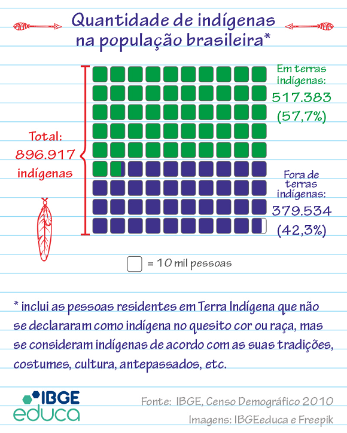
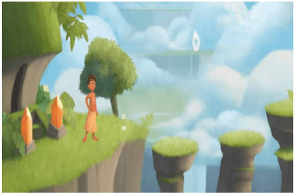

Texto 03 - População I – origem e formação da população brasileira
Conteúdo: Matriz étnica: índios, negros e brancos; Imigração.
Objetivo: Entender a formação da população brasileira com base nas suas três matrizes
étnicas (africanos, europeus e indígenas). Identificar e entender dinâmicas de miscigenações e imigração
para a formação da população brasileira.
Digite seu nome
Introdução
Naula passada vimos como ocorreu a consolidação do território brasileiro.
As mudanças no mapa do Brasil, nos limites entre seus Estados e como chegamos a atual regionalização com
cinco regiões.
Nesta aula, veremos como se deu a formação da população brasileira a partir da dimensão étnica, ou seja, a
partir dos grupos que apresentam certa homogeneidade biológica e cultural, como os indígenas, negros e
brancos.
Veremos a distribuição da população pelo território e como essa formação tornou o povo brasileiro uma nação
singular no mundo.
Duvid - Entrevista
Essa semana a convidado é o professor Darcy Ribeiro (1922-1997 - in memoriam).
Duvid: Professor Darcy Ribeiro é uma enorme satisfação recebê-lo aqui para conversarmos
sobre o povo brasileiro, aliás um dos seus livros mais famosos. Obrigado por ter aceitado o nosso convite.
Prof. Darcy Ribeiro: Estou muito contente de poder partilhar meu conhecimento com vocês que
veem o mundo pelo espaço geográfico. Eu o vejo pela cultura, o que puder contribuir para o conhecimento do
Brasil, assim o farei.
Duvid: Gostaria de começar nossa conversa questionando, quem somos nós, como se formou o
povo brasileiro?
Prof. Darcy Ribeiro: Essa foi a pergunta da minha vida! Ao menos nos últimos trinta anos que
escrevi e reescrevi meu livro: O povo brasileiro. Eu queria investigar porque o Brasil não deu certo e
construir, ao mesmo tempo, uma teoria geral que explicasse o Brasil. Eu decidi fazer isso sem uma visão
eurocêntrica, mas a partir da constituição do nosso povo, do processo civilizatório que nos colocou na
história do mundo.
Duvid: Nessa busca que o senhor empreendeu para descobrir a origem nosso povo, seria
importante esclarecer como se deu nossa formação inicial?
Prof. Darcy Ribeiro: Minhas análises como antropólogo possuem um fundo patriótico. E através
dessa linha, digo sempre, que surgimos da confluência, um país sob a regência dos portugueses, do
entrechoque e do caldeamento do invasor português com índios que viviam na floresta ou no cerrado, quer
dizer os silvícolas e os campineiros, e com os negros africanos, uns e outros aliciados como escravos.
Duvid: E de tudo isso, podemos dizer que surgiu desse lado do Atlântico um povo distinto do
europeu, por quais razões?
Prof. Darcy Ribeiro: Há dois processos nessa formação. O primeiro, o surgimento de um povo
novo. Entretanto, há, em segundo lugar, a manutenção do velho. Vou tentar ser mais claro. O povo novo nasce
dessas culturas e matrizes raciais tão distintas, uma etnia diferenciada, mestiça. Um tipo de gente nova
porque assim é vista por si mesmo e pelos outros. Mas também é um povo velho, pois está ligado a exploração
externa dirigida pela expansão europeia para gerar lucros para a metrópole. O Brasil é, em resumo, um
mutante, possui características próprias, entretanto, está desde sua gênese ligado a matriz portuguesa.
Duvid: Professor, como ocorreu, na sua visão, esse choque entre diferentes mundos, o do
europeu e dos habitantes das Américas?
Prof. Darcy Ribeiro: Vocês podem imaginar a chegada além-mar de um grupo pequeno mas
superagressivo e capaz de destruir sob diversas formas, principalmente por infecções a população indígena
existente? Os conflitos surgiram em diversos níveis. No plano biológico com as bactérias trazidas pelos
europeus e que eram mortais para a população indígena. No ecológico, pela disputa do território, suas matas
e riquezas para outro uso. No econômico e social, pela escravização do índio, pela mercantilização das
relações de produção que uniu esses dois mundos, o europeu, velho mundo, e o brasileiro como provedor de
gêneros exóticos, escravos, ouro etc.
Duvid: ... e os indígenas foram os primeiros a sentir na pele a grande mudança que estava
preste a acontecer?
Prof. Darcy Ribeiro: Exatamente. Para os indígenas, com toda sua espiritualidade aflorada,
esse acontecimento da chegada dos europeus foi algo espantoso, uma verdadeira visão mítica do mundo. As
tribos não possuem essa característica de classe ou tampouco uma visão da vida marcada por relações
comerciais. Após alguns anos, viram-se inserido na maior tragédia possível: destruição das bases de sua vida
social, negação de seus valores, cativeiro, trabalho forçado, etc. Grande parte morria de tristeza, certos
de que não poderiam mais viver naquela situação.
Duvid: Professor, de acordo com suas pesquisas, o que estava por trás dessa violência toda
que ocorreu com a invasão do Brasil?
Prof. Darcy Ribeiro: Em um contexto mais amplo, os portugueses (e também os espanhóis)
tinham acabado de se livrar da ocupação secular dos árabes e tinham expulsados os judeus de seus
territórios. A expansão marítima, fruto da guerra por conquista, do saqueio, da evangelização sobre os povos
da África, da Ásia e, principalmente, das Américas, consolidaram o primeiro sistema econômico mundial, que
unificaria Portugal e Espanha, e, ao mesmo tempo, interrompia o desenvolvimento autônomo, a alegria, as
culturas originais dos povos que aqui viviam.
Duvid: E esse sistema foi forjado a partir do escravagismo?
Prof. Darcy Ribeiro: ... e por meio da miscigenação. A escravidão indígena predominou ao
longo de todo o primeiro século. Somente no século XVII a escravidão negra viria a ultrapassá-la. Os
indígenas eram utilizados principalmente para produção de subsistência como preparo de alimentos, caça e
pesca. A escravatura negra era preferível para a produção mercantil de exportação. Dessa mistura de brancos
e índios surgem os mamelucos, que foram fundamentais para o domínio português terra adentro.
Duvid:E a maioria dos negros foram trazidos de quais países?
Prof. Darcy Ribeiro: De modo geral, os negros do Brasil foram trazidos principalmente da
costa ocidental africana. Podemos dividi-los em três grandes grupos com culturas diversas: 1) os de cultura
sudanesa, provenientes da Gâmbia, Serra Leoa e Costa do Marfim. 2) o grupo com cultura islamizadas do Norte
da Nigéria que se instalaram na Bahia e Rio de Janeiro, por exemplo. 3) E as tribos Bantos, do grupo
congo-angolês, da Angola e Moçambique.
Duvid: Como se deu essa adaptação dos africanos nessa sociedade emergente do Brasil?
Prof. Darcy Ribeiro: Os negros foram forçados a incorporar-se passivamente no universo
cultural dessa nova sociedade. Eles foram a mão de obra que produziu tudo o que aqui se fez. Mas havia uma
política de não permitir uma concentração de escravos de uma mesma etnia nas fazendas e até nos navios. Além
de distintas línguas e culturas, isso dificultou a construção de uma patrimônio cultural africano. Mas toda
essa herança africana, o meio cultural e racial, associada a crença indígena iria criar uma fisionomia
singular à cultura brasileira.
Duvid: O período escravocrata no Brasil moldou nossa cultura com repercussões até hoje?
Prof. Darcy Ribeiro: Sim, de fato. O Brasil que se construía, sua base ecológica, o projeto
colonial, a monocultura e o escravismo resultou em uma sociedade totalmente nova. A empresa escravista foi
fundada na violência mais cruel de apropriação de seres humanos e de coerção permanente, exercida através
dos castigos mais atrozes, isso tudo atuou como mola desumanizadora e deculturadora de eficácia
incomparável. Nenhum povo que passasse por isso como sua rotina de vida, através de séculos, sairia dela sem
ficar marcado indelevelmente. Todos nós, brasileiros, somos carne da carne daqueles pretos e índios
supliciados.
Todos nós brasileiros somos, por igual, a mão possessa que os supliciou. A doçura mais terna e a crueldade
mais atroz aqui se conjugaram para fazer de nós a gente sentida e sofrida que somos e a gente insensível e
brutal, que também somos. Descendentes de escravos e de senhores de escravos seremos sempre servos da
malignidade destilada e instalada em nós, tanto pelo sentimento da dor intencionalmente produzida para doer
mais, quanto pelo exercício da brutalidade sobre homens, sobre mulheres, sobre crianças convertidas em pasto
de nossa fúria. (...). Essa herança terrível, porém, provocando crescente indignação, nos dará forças,
amanhã, para conter os possessos e criar aqui uma sociedade solidária.
Duvid: Professor, nós podíamos ouvi-lo por dias, mas gostaríamos de retomar a primeira
questão que lhe fizemos: Como o senhor definiria o povo brasileiro hoje?
Prof. Darcy Ribeiro: Estou muito feliz com essa pergunta. Como cientista eu vivo na corda
bamba entre utopias e o rigor científico. Entretanto, creio que nós, brasileiros, nesse quadro, somos um
povo em ser, impedido de sê-lo. Um povo mestiço na carne e no espírito, já que aqui a mestiçagem jamais foi
crime ou pecado. Nela fomos feitos e ainda continuamos nos fazendo. Essa massa de nativos oriundos da
mestiçagem viveu por séculos sem consciência de si, afundada na ninguendade. Assim foi até se definir como
uma nova identidade étnico-nacional, a de brasileiros. Um povo, até hoje, em ser, na dura busca de seu
destino. Os brasileiros são, hoje, um dos povos mais homogêneos linguística e culturalmente e também um dos
mais integrados socialmente da Terra. Falam uma mesma língua, sem dialetos. Não abrigam nenhum contingente
reivindicativo de autonomia, nem se apegam a nenhum passado. Estamos abertos é para o futuro.
Duvid:
Professor, muito obrigado pelas suas análises, temos certeza de que foram igualmente um convite muito
agradável à todos para que conheçam sua imensa obra.
Prof. Darcy Ribeiro: Eu agradeço mais uma vez pelo convite em estar aqui e digo que
continuaremos na luta para florescer amanhã como nação, mais alegre porque sofrida e melhor porque
incorporamos mais humanidades. Mais generosa, porque aberta à convivência com todas as raças e todas as
culturas.
A importância do Censo Demográfico
O instrumento utilizado para levantar os dados sobre a população brasileira e a realidade do território é
feito através do Censo Demográfico.
O IBGE é o órgão responsável pelo Censo. É um processo longo e envolve milhares de pessoas, dentre eles, os
recenseadores. O Censo é o processo de contar e obter informações sobre as características dos habitantes de
um país.
O recenseador visita a casa de todos os brasileiros, vestido com um jaleco azul e com a identificação do IBGE
e anota em seu aparelho eletrônico algumas questões. Há uma pesquisa simples e outra, por amostragem, mais
aprofundada. Na primeira, é questionado a idade, a cor da pele, baseado nas opções entre Branco, Pardo,
Preto, Amarelo ou Indígena; Questões sobre grau de escolaridade, Além de questões sobre saneamento básico,
número de banheiros, renda, dentre outras. No questionário completo as questões possuem mais opções como
tipo e características do domicílio, religião, pessoas com deficiências residentes, trabalho e rendimento,
etc.
Há outros questionários importantes como as características do entorno, sobre a pavimentação das ruas,
circulação, existência de calçadas e arborização. Também existe um questionário específico para a população
indígena sobre características e infraestruturas das aldeias e escolaridade.
Quase todos os países fazem, com regularidade, os seus censos demográficos em cada década: contam seus
habitantes e obtêm informações que permitem identificar as suas características (sexo, idade, cor, religião,
migração, educação, trabalho, entre outras), conhecer em detalhes as condições em que vive a população e os
seus níveis de desenvolvimento socioeconômico, assim como traçar um retrato abrangente e fiel da realidade
nacional.
A composição étnica brasileira
O IBGE utiliza o conceito de raça em seu questionário para o Censo. Há, da mesma forma, o conceito de etnia.
econômico? Por conta da sua falta de integração
×
Raça: refere-se ao âmbito biológico; referindo-se a seres humanos, é um termo que foi utilizado
historicamente para identificar categorias humanas socialmente definidas. As diferenças mais
comuns referem-se à cor de pele, tipo de cabelo, conformação facial e cranial, ancestralidade e
genética.
×
Etnia: refere-se ao âmbito cultural; um grupo étnico é uma comunidade humana definida por
afinidades linguísticas, culturais e semelhanças genéticas. Essas comunidades geralmente
reclamam para si uma estrutura social, política e um território.
No meio acadêmico, hoje, há amplo consenso de da ineficácia teórica do termo raça como conceito biológico,
tendo sido definitivamente erradicado pela genética, mas, ao mesmo tempo, multiplicam-se as constatações de
sua persistência como realidade simbólica extremamente eficaz nos seus efeitos sociais.
Isso se confirma quando, por exemplo, o IBGE realizou um pesquisa específica sobre as características
étnico-raciais da população em 2008. Nessa pesquisa, o quesito das respostas é fechado, quer dizer, o
entrevistado responde a partir de opções já estabelecidas. Entretanto, quando se fez um teste com questões
abertas, surgiram mais de 300 respostas, como cor branca, clara, morena, escura, misturada, rosa, dentre
inúmeras outras.
Para se ter uma ideia da distribuição da população de acordo com a raça, temos os dados do último Censo de
2010:

Fonte: IBGE. Censo demográfico 2010.
É interessante notar que a maioria da população brasileira é formada por pardos e pretos. Em 2019, essa
situação sofreu uma modificação:
O IBGE pesquisa a cor ou raça da população brasileira com base na declaração. Ou seja, as pessoas são
perguntadas sobre sua cor e podem se declarar como brancas, pretas, pardas, indígenas ou amarelas.
Se fôssemos uma pequena comunidade de 100 pessoas, 43 brasileiros se declarariam como brancos, 47 como
pardos, nove como pretos e, aproximadamente, um brasileiro se declararia como amarelo ou indígena.Veja:

Porém, somente uma tabela não permite visualizar a distribuição completa pelo território. Nesse caso, é
necessário um mapa, conforme abaixo:
Mapa de distribuição racial no Brasil (2010)

Fonte: http://patadata.org/maparacial/. Acesso em 10
ago. 2022.
No mapa é possível observar o predomínio da população branca nas regiões sudeste e sul do Brasil. O mapa,
evidentemente, não é uma representação idêntica à realidade, mas fornece um panorama interessante sobre a
localização dos indivíduos no território e também seu vazio demográfico, isto é, área onde não há muitas
pessoas concentradas.
Vamos falar de matriz étnica quando quisermos nos referir a formação da população brasileira baseada em
brancos, negros africanos e povos indígenas. Nossa população formou-se tanto pela colonização como pela
vinda de imigrantes. É uma história de concentração relativa e de miscigenações.
Iniciaremos essa jornada pela origem histórica, depois sobre os índios, em seguida sobre a participação dos
negros e, por fim, do papel da imigração na formação da população do Brasil.
A formação histórica e os grupos étnicos no Brasil
Em 1500 havia, por volta, de 5 milhões de índios no Brasil. Depois entraram cerca de 6 milhões de negros e,
aproximadamente, 4 milhões de brancos. O Nordeste foi a primeira região a ser colonizada, com mão de obra
escrava para a cultura da cana-de-açúcar. No Norte ocorreu ocupação tardia com influência indígena, em
caboclos (brancos e índios) e cafuzos (negros e índios). No Sudeste, predomínio de brancos imigrantes que
vieram trabalhar na cultura de café, após o término da escravidão. No Sul, maioria branca, imigrantes que
receberam propriedades para ocupar essa parcela do território.
A grande marca da população brasileira está baseada na miscigenação ou no cruzamento entre grupos étnicos.
Diferentes de outros países, a cor da pele tem um peso grande no Brasil, daí a denominação de mulato (branco
e negro). Esse critério não leva em conta a herança genética da pessoa. Há países que classificam sua
população pelas origens e pela identificação cultural de cada um. Mesmo com pele branca e cabelos lisos, há
aqueles que preferem se declarar afro-americanos ou indígenas, pois possuem ancestrais desses grupos
étnicos. Entretanto, esse tema vem mudando ao longo das décadas.

Fonte: IBGE. Recenseamentos gerais de 1950, 1980, 2000
e 2010.
As informações sobre etnias nem sempre fizeram parte das pesquisas no Brasil. Os Censos de 1960 e 1970, por
exemplo, não registraram esses dados. Na tabela acima é possível observar um ajuste sobre o pertencimento
dos grupos étnicos. Sabemos hoje que o Brasil é constituído por maioria parda e negra, o que tem ligação
direta com o passado de formação da população.
Houve melhorias com o passar das décadas, como incluir os indígenas em grupos separados dos orientais.
Entretanto, a noção de pardo ainda pode confundir, pois incluiria tanto descendentes de africanos como de
indígenas.
Quais os motivos dessa mudança de percepção ou de atitude dos brasileiros em sua declaração sobre qual grupo
étnico pertencem?
Há diversos motivos, mas o fato de que nas décadas passadas a maioria da população se declarava de cor branca
com mais de 60% na década de 1950, mesmo tendo descendentes negros ou indígenas tem a ver com o preconceito
existente na sociedade brasileira. Porém, com as conquistas e avanço da legislação em favor dos direitos dos
indígenas e, por exemplo, da demarcação de suas terras, além das políticas de cotas nas universidades para
negros, tudo isso contribuiu para uma mudança de percepção e culminou em um maior ajustamento da realidade
entre a população e seus grupos étnicos.
O Censo de 2010 revelou, da mesma forma, a distribuição e diferenças regionais em relação às etnias. A
região Sul concentrava 78% da proporção de brancos, em seguida pela região Sudeste 56%. Nas regiões Norte e
Nordeste esses dados são reduzidos, com 23% e 29% respectivamente do total.
Na Região concentram quase 40% dos indígenas do Brasil e quase 70% se declaram pardos. Na região Nordeste há
o maior percentual de negros (8%) e pardos, a segunda maior proporção (62%).
Em pesquisas envolvendo amostras de DNA nos grupos considerados brancos, constatou-se uma média de 33% de
linhagens provenientes de indígenas e 28% de africanas. A miscigenação no Brasil ocorreu com heranças
genéticas a partir do sexo feminino, isto é, essa mistura foi resultado do homem branco europeu com mulheres
indígenas ou africanas.
Isso porque na época da colonização havia poucas mulheres europeias. Os colonizadores raramente traziam as
mulheres e filhas.
A população indígena
De acordo com os dados do Censo 2010, no Brasil vivem 896.917 pessoas que se declaram como indígenas. Desse
total de pessoas, 57,7% vivem em terras indígenas oficialmente reconhecidas.

A estimativa é a de que viviam cerca de 3,5 milhões de indígenas na época da chegada dos portugueses.
Já em relação as etnias, o IBGE contabilizou 305 diferentes no Brasil. Os principais troncos étnicos e suas
ramificações são:
Com relação à língua falada, o Censo 2010 identificou 274 línguas indígenas no Brasil, sendo que 57,1% dos
indígenas não falam a língua indígena, já 76,9% deles falam a Língua Portuguesa.
Entre os indígenas que vivem em Terras Indígenas esses percentuais se alteram, 57,3% falam alguma língua
indígena e 28,8% não falam a Língua Portuguesa.
A maior parte dos indígenas são alfabetizados (76,6%). Inclusive os indígenas que vivem em Terras Indígenas
são alfabetizados, em sua maioria (67,7%).
É importante lembrar que o termo índio ou indígenas foi uma classificação imposta pelos colonizadores, pois a
população autóctone,
que já ocupava esse território se identificava como Xavante, Karajá, Suyá etc.
Obviamente que para garantir seus direitos houve através dos séculos uma unidade e uma união em torno de uma
minoria étnica no intuito de reivindicar a solução dos problemas indígenas, seja no reconhecimento das
terras indígenas ou na forma de relação com a terra, diferente da sociedade dominante.
Nas próximas aulas veremos os problemas da política indigenista e da remarcação de terras que envolvem
conflitos com brancos pelo país.
Estima-se que 4,8 milhões de africanos foram transportados para o Brasil e vendidos como escravos, ao longo
de mais de três séculos. Outros 670 mil morreram no caminho entre as mais de 9 mil viagens de navios entre o
Brasil e o continente africano nas mais desumanas condições.
Todo o processo de escravização dos africanos pelos colonizadores e seu uso como mão de obra foi marcada pela
desumanidade.
As línguas e a cultura africana foi quase que totalmente extirpada de cada grupo que chegava no Brasil.
Banto, Fulas ou Kanembu eram proibidos, inclusive, de estar na mesma vila.
Aliás, o próprio desenvolvimento do capitalismo, a escravidão e nascimento de outro tipo de economia
internacional devem ser analisados em conjunto.
Por que escravizar outros seres humanos, ao invés de contratar trabalhadores livres assalariados?
Claro que o Brasil estava inserido na política mercantilista da época, ou seja, enriquecer a metrópole
através da produção de gêneros tropicais e da extração de metrais preciosos com baixo custo.
Dado o tamanho do território brasileiro com milhões de hectares de terras disponíveis, os europeus não
precisariam trabalhar para ninguém, mas cultivar a própria terra.
O objetivo principal era o lucro que o tráfico de escravos proporcionava com o transporte de seres humanos da
África para a América. Haviam distinções entre a escravidão indígena e a africana. Características de cada
etnia, além de preocupação política da Metrópole com a possibilidade de revoltos dos colonos no Brasil.
Entretanto, com a Revolução Industrial iniciado no século XVIII e intensificada no século XIX, as máquinas
aumentaram a produtividade capitalista a tal ponto que foi necessário ampliar o mercado consumidor. Por
isso, segundo os historiadores, O Reino Unido decidiu pôr fim ao comércio de escravos em suas colônias a
partir de 1807 e em todo o mundo. Portugal e Brasil foram os países que mais resistiram. No Brasil o tráfico
negreiro foi proibido em 1850 e a escravidão em 1888 (último país do mundo a tomar essa decisão).
Ser negro no Brasil hoje
O geógrafo Milton Santos escreveu que:
Ser negro no Brasil é, pois, com frequência, ser objeto de um olhar enviesado. A chamada boa sociedade
parece considerar que há um lugar predeterminado, lá em baixo, para os negros e assim tranquilamente se
comporta. Logo, tanto é incômodo haver permanecido na base da pirâmide social quanto haver "subido na vida"
Ao observar a realidade, vemos que há diferenças sociais e econômicas seculares e permanentes entre a
população brasileira. Trata-se de um fato. As condições, além de não serem as mesmas, revelam um país de
maioria parda e negra com um lugar inferior na hierarquia social para essa população, com salários mais
baixos, vivendo em piores condições, e com os piores trabalhos, dentre outros aspectos.
Os dados recentes mostram que a média de rendimento mensal dos pardos correspondem a 80% da população branca
e o dos negros a 74%. Por exemplo, se o rendimento mensal em média do branco é de 2.796 reais, o da
população negra é de 1.608 reais. Os negros também compõem 63% dos pobres e 69% dos indigentes totais do
Brasil, sem falar na taxa de desemprego que é maior nessa faixa da população, e o, acesso à educação através
de anos de estudo, em média menor, dentre outras variáveis (Agência, 2022).
Se as desigualdades no Brasil são evidentes e muito fortes nos grupos étnicos, a situação dos negros é pior,
com raras exceções. Veja o exemplo das mulheres negras, além do preconceito ocupam posições subalternas no
mercado de trabalho. No Brasil, quase 80% das empregadas domésticas são de ascendência
afro-brasileira.
Esse tipo de atividade, raro na maioria de outros países em virtude dos elevados salários desses
profissionais, aqui no Brasil é praticamente cultural ou quase como uma forma de escravidão, embora as
conquistas trabalhistas nas últimas décadas tenha reduzidos os abusos com esses profissionais.
A busca de direitos é um processo longo, mas o reconhecimento dos Quilombos (comunidades de negros
despossuídos de terras) e ações afirmativas, como cotas nos processos seletivos para universidades no país
estão na ordem do dia para reduzir essas desigualdades.
O papel da imigração no Brasil
A matriz étnica branca no Brasil foi formada por diversos povos, mas sobretudo pela população europeia.
No período colonial, além dos portugueses, entraram no Brasil espanhóis, holandeses, franceses, ingleses e
italianos.
Após a independência do Brasil houve uma nova entrada maciça de imigrantes, principalmente entre 1850 a 1934
e se instalaram em diversas regiões do país. Os principais são:
Portugueses – desde a colonização os portugueses, o grupo mais numeroso, contribuiu para a
formação do povo brasileiro com a mistura com indígenas e negros. Nos grandes centros urbanos,
principalmente Rio de Janeiro e São Paulo, a presença de portugueses é mais numerosa.
Italianos – depois dos portugueses, outro grupo mais numeroso a imigrar para o Brasil.
Grande parte vieram para São Paulo, entretanto grande número para o Rio Grande do Sul (especialmente Bento
Gonçalves, Garibaldi, Caxias do Sul), em Santa Catarina (Nova Trento, Nova Veneza), no Paraná e no Rio de
Janeiro.
Espanhóis – o terceiro grupo mais numeroso dentro do grupo branco no país. Distribuídos,
principalmente em São Paulo e, em menor proporção, no Rio de Janeiro, em Minas Gerais e no Rio Grande do
Sul.
Há outros grupos brancos de origem europeia que também se destacam na população brasileira, são eles:
Alemães - os imigrantes alemães foram alocados principalmente no Sul do Brasil, nos Estados
de Santa Catarina (Blumenau, Joinville) e no Rio Grande do Sul (São Leopoldo, Novo Hamburgo). Há pequenos
grupos em São Paulo, Paraná e no Espírito Santo.
Eslavos – o povo eslavo são oriundos de países como Polônia, Rússia e Ucrânia, com
predominância no Paraná, nas cidades de Curitiba e Ponta Grossa.
Muitos imigrantes vieram da Ásia, os principais são:
Sírio-libaneses – o Brasil possui milhões de descendentes de sírios e de libaneses. De
língua árabe, a maioria cristão, mas há muitos muçulmanos também. Dedicam-se principalmente no comércio e há
muitos políticos brasileiros com essa origem.
Japoneses - estima-se que quase 2 milhões de japoneses e descendentes vivam no Brasil. A
maior população foram do Japão. Estão radicados principalmente em São Paulo e Norte do Paraná (Londrina e
Maringá). Mas também no Mato Grosso, Pará e Amazonas. A maioria iniciou nas atividades agrícolas, ligados ao
plantio de hortaliças, além de arroz e algodão.
Chineses – calculam-se que a população total de chineses no Brasil seja de 250 a 300 mil
habitantes. Desde a década de 1990 os número aumentaram bastante, principalmente nos grandes centros como
Rio de Janeiro e São Paulo nas atividades do comércio, alimentação.
Coreanos – mais recente e em menor número (50 mil) estão os coreanos residentes em São Paulo
na capital paulista.
Não existe pergunta boba! A Ciência é feita de perguntas!
P:
O que diferencia o povo brasileiro dos outros povos?
R: Essa questão se refere a identidade étnica brasileira. Na geografia e
história local, ondo o povo habita mesmo, se forjou os tipos de brasileiros como a cultura crioula que se
desenvolveu nas comunidades da faixa de terras frescas do Nordeste, principalmente com base no engenho
açucareiro; Pela cultura caipira junto aos mamelucos paulistas, inicialmente com as atividades de caça de
índios para venda e, depois, da mineração de outro e diamantes e mais tarde com as grandes fazendas de café.
Pela cultura sertaneja que se difundiu pelos currais de gado, desde o Nordeste árido até os cerrados do
Centro-Oeste. Pela cultura cabloca das populações da Amazônia, na coleta das drogas da mata e,
principalmente, nos seringais. Pela cultura gaúcha do pastoreio no Sul do Brasil em áreas colonizadas por
imigrantes, principalmente alemães e italianos.
P:Quais as marcas para a população brasileira
deixadas pelo colonizador europeu?
R: O Brasil nasceu como uma empresa escravista e exótica devido a força e
diversidade de suas florestas com sua fauna e flora exuberantes. O seu povo mestiço, com sangue de índio,
afros e brancos viveu como um proletariado externo dentro de uma possessão estrangeira. Os interesses e
aspirações de seu povo jamais foram levados em conta. A consequência disso, foi, dentre outras coisas, um
território marcado pela prosperidade empresarial de um lado, e uma penúria generalizada da população local,
um aglomerado multiétnico com brutal perda da sua cultura e pela eliminação física dos seus povos. Quando os
imigrantes chegaram mais tarde, esse povo falante, sobretudo, da língua portuguesa já amadurecia sua
integração como Estado-Nação.
P:
O que é racismo?
R:
Racismo é toda distinção, exclusão ou restrição baseada em raça, cor, descendência ou origem nacional ou
étnica que tenha por objeto anular ou restringir o reconhecimento, gozo ou exercício de direitos humanos e
liberdade fundamentais.
Fonte: Convenção Internacional sobre a Eliminação de Todas as Formas de Discriminação Racial.
Desafio - Jornada do herói: o mundo comum
Nesta aula vamos continuar a estudar a jornada do herói para pensarmos sobre um jogo com o tema do
Brasil. Hoje vamos novamente formar o nosso grupo e refletir sobre o primeiro tema dessa jornada: o
mundo comum. Ao final, anote suas observações em seu caderno.
Instruções
Forme um grupo com 5-6 estudantes;
Leia o texto abaixo e discuta com seu grupo o conteúdo das questões;
Faça anotações em seu caderno;
Seja criativo, use os conhecimentos que você já possui sobre o Desafio.
Tempo da atividade: 25 minutos.
Mundo comum
Este é o começo da história, serve para contextualizar e mostrar o cenário. É aqui que a história do
herói é revelada para o público.
O começo da jornada do herói é sobre seu mundo cotidiano. Como seria o mundo comum dos indígenas antes da
chegada dos colonizadores portugueses?
O mundo comum é como o herói se aventura do mundo da vida cotidiana para uma região de aventuras e
conflitos.
Contraste
No filme Star Wars, Luke Skywalker vive uma vida frustrante com seu tio e tia em Tatooine. Mas o
herói está inquieto, sente que deve mudar algo na realidade e se transformar. O mundo comum parece algo
chato e calmo, mas os problemas e conflitos do herói já estão presentes, só esperando ser ativados.
Levantando a questão dramática
É no mundo comum do herói que vai surgir a questão dramática principal do jogo ou do filme. Toda boa
história levanta uma série de perguntas sobre o herói. Será que ela vai atingir seu objetivo? Superar
seu defeito? Aprender sua lição? Ou voltar para casa? Conseguir o outo ou ganhar o jogo?
Problemas internos e externos
Todo herói precisa de um problema interno e outro externo. Será que o herói é egoísta ou precisa
acreditar mais em si mesmo? Veja um exemplo de jogo sobre a população indígena criado pela Universidade Federal de São Carlos:
O jogo "Jeriguigi e o Jaguar na terra dos bororos" é voltado para crianças de 5 a 9 anos.

Na história, o personagem deve enfrentar três desafios antes de retornar à aldeia, durante os quais ele
se depara com animais perigosos, condições naturais adversas e as próprias limitações comuns ao ser
humano.
Título
Como podemos pensar em nosso próprio jogo sobre o Brasil? Qual seria o título do jogo?
Entrando em cena
No jogo Zelda – A Link to the Past, o personagem Link aparece dormindo em seu quarto quando
recebe um pedido de ajuda. Já no jogo God of War IV, Kratos surge cortando uma árvore e, de
repente, se lembra de seu passado como Deus da Guerra ao apertar suas faixas em seu braço, agora sem as
lâminas do caos.
Apresentando o herói a plateia
Essa parte é importante da caracterização e apresentação do personagem e do mundo ao seu redor para o
público: Que roupa está usando, quem está em volta, como reage a ele? Qual sua atitude, emoção, objetivo
nesse momento? Entra em cena sozinho ou dentro de um grupo? Ou já está em cena quando a história começa?
É ele quem narra a história, esta é vista pelos olhos de outro personagem ou é contada objetivamente,
por meio de uma narrativa convencional?
Identificação entre o público e o herói
O herói deve ter objetivos, impulsos, desejos e necessidades especiais. O herói quer ser reconhecido?
Quer afeição ou ser aceito por uma comunidade?
A carência do herói
Quais as carências do herói? O que lhe foi tirado? Por que ele está disposto a lutar por isso? Alguém foi
raptado, morto ou ficou doente e o herói precisa resgatar, se vingar ou cuidar.
Falhas trágicas
Quais são as falhas do herói? Ele é arrogante ou orgulhoso.
Heróis feridos
O herói tem uma ferida psicológica? Ele sofreu rejeição, traição ou desapontamento?
Estabelecer o que está em jogo
O que é que o herói se arrisca a ganhar ou perder na aventura? Quais serão as consequências para o herói,
para a sociedade, e para o mundo, se ele tiver êxito ou fracassar?
O herói grego Perseu, retratado no filme Fúria de Titãs, tem que vencer várias provas, caso contrário sua
amada princesa Andrômeda será devorada por um monstro marinho. Outras histórias ameaçam parentes, como o
pai que corre risco em A Bela e a Fera. A heroína tem uma motivação forte para se colocar na posição
perigosa de ficar à mercê da Fera, pois o pai dela morrerá caso ela não faça o que o monstro exige.
História Pregressa e Exposição
Qual a história pregressa do herói? Qual o passado dele?
Tema
Qual o tema principal do jogo? Vaidade, preconceito, Ambição, Justiça? No jogo The Last of Us
II, o tema principal é a vingança.
Agência Senado. Negro continuará sendo oprimido enquanto o Brasil não se assumir racista, dizem
especialistas. Disponível em:
https://www12.senado.leg.br/noticias/
infomaterias/2020/06/negro-continuara-sendo-oprimido-enquanto-o-brasil-nao-se-assumir-racista-dizem-especialistas.
Acesso em: 17 ago. 2022.
IBGE - Conheça o Brasil – População cor ou raça. Disponível em: https://educa.ibge.gov.br/jovens/
conheca-o-brasil/populacao/18319-cor-ou-raca.html. Acesso em: 28 jul. 2022.
Navios portugueses e brasileiros fizeram mais de 9 mil viagens com africanos escravizados. Disponível em:
https://www.bbc.com/portuguese
/brasil-45092235#:
Acesso em: 17 ago. 2022.
SANTOS, Milton. Ser negro no Brasil hoje. Disponível em:
https://www1.folha.uol.com.br
/fsp/mais/fs0705200007.htm. Acesso em: 17 ago. 2022.
Somos todos iguais? Retratos (A revista do IBGE), n.11, maio 2018.
VESENTINI, José William. Geografia: o mundo em transição. Ensino médio. 2. ed. – São
Paulo: Ática, 2013.
 Duvid - Entrevista
Duvid - Entrevista